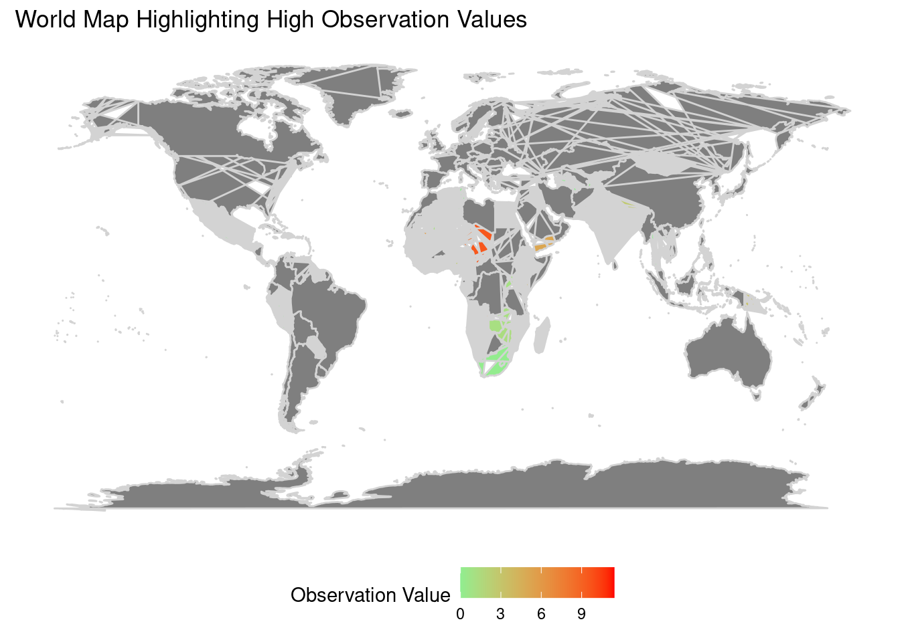
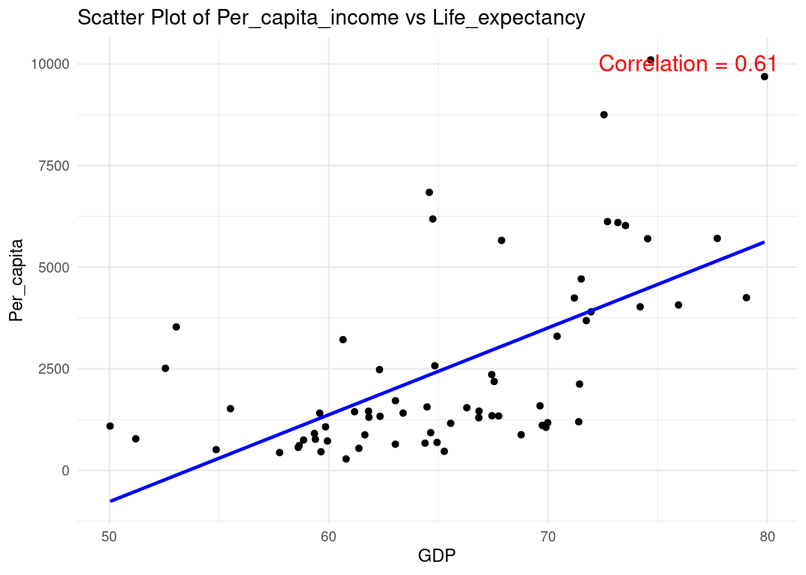
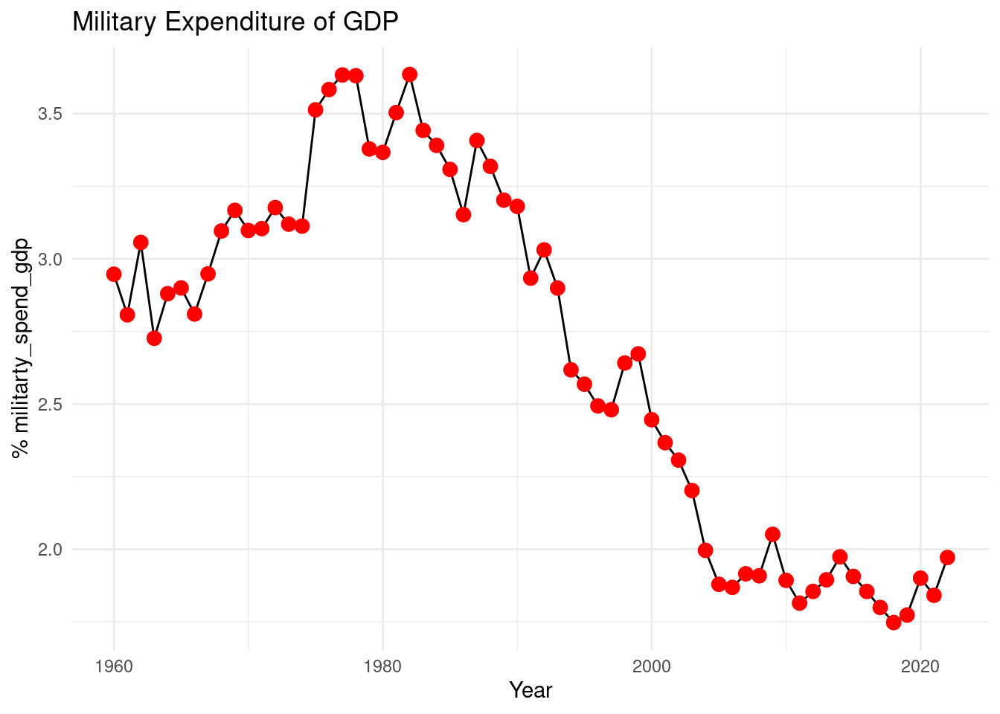
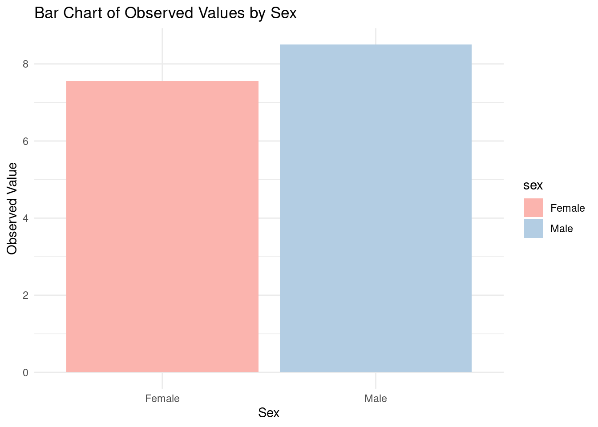

UNICEF INDICATOR ANALYSIS
Children Suffering Exactly 3 Deprivations across the World
Data preparation
We are reading unicef_indicator_1.csv,unicef_indicator_2.csv & unicef_metadata.csv into R environment for analysis. We have generated a unique key based on country code and year to join unicef_indicator_1.csv with unicef_metadata.csv. This helps us to get some trends by combining both files
In below world map we have highlighted countries with high Percentage of Children suffering exactly three deprivation. These countries require more effort from the WHO team. Most of the countries lie in Africa (which is a low per capita country and does not have stable governments)
Correlation Between Per capita income and Life expectancy
There is a high positive correlation of 0.61 which means that countries with high per capita income tend to have greater life expectancy.

Trend between Military Expenditure over Years
Countries with high military spending often have limited resources left for social sectors, potentially exacerbating child deprivations in health, education, and overall well-being. This trend highlights the need for a balanced approach in resource allocation, ensuring that the pursuit of security does not undermine the critical investments required to address and reduce child deprivation, Over the time we observed that military spending has reduced as % of GDP which means the world is more stable now and GDP of countries is increasing. After 2020 we see military spending as % of GDP increasing as the GDP of countries took a hit during COVID-19 and some war-like situations were observed in some countries.

Top Deprived Countries
Out of 10 deprived countries 9 are in Africa and 1 in Asia. This means indicators in Africa are quite poor and more efforts are needed in Africa. Madagascar is the most Deprived Country.
Top Deprived Countries Bar chart
For top-deprived countries it is observed that Males are more prone to deficiencies than females. Created a bar chart depicting the same.

In Conclusion, The analysis of UNICEF indicators has illuminated critical insights into the disparities in child deprivation across different regions of the world, particularly highlighting the acute challenges faced by African nations. By correlating these indicators with economic metrics such as GDP per capita and military expenditure, it becomes evident that economic prosperity is closely linked with higher life expectancy and potentially lower rates of deprivation among children. However, the persistence of high deprivation levels in several countries, especially those with unstable governments and low per capita income, underscores the urgent need for targeted interventions. These interventions should be strategically focused on the most affected regions, with an emphasis on comprehensive support to improve the overall well-being and prospects of the children in these areas. This analysis not only sheds light on the current state of child deprivation but also calls for a sustained global effort to alleviate these disparities, thereby ensuring a better tomorrow for all children.